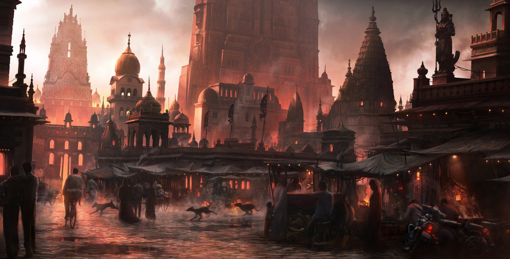

Urban fantasy

Podgatunek literatury fantasy, którego akcja rozgrywa się w mocno zurbanizowanych terenach. Jest to połączenie naszego świata z magią i mitycznością fantasy. Najlepiej opisują to słowa Andrzeja Sapkowskiego.
Andrzej Sapkowski
"Urban fantasy (wymawia się "erben"), to jeden z subgatunków naszego ulubionego, jakże bogatego gatunku literackiego. Mianem urban fantasy określamy utwory utrzymane w poetyce pikarejsko-wielkomiejskich ballad, krzyżujące i godzące atmosfery kryminałów Chandlera z tymi rodem z West Side Story i z tymi z Pulp Fiction, tymi z ballad Leonarda Cohena i Stinga z tymi z tekstów i muzyki Marka Knopflera, Kurta Cobaina i Sida Viciousa. Utwory, w których magia wśród kwadrofonicznego łomotu rock and rolla i ryku Harleyów wkracza do betonowo-asfaltowo-neonowej dżungli naszych miast. Magia wkracza. Wraz z nią wkraczają mieszkańcy magicznych krain. Najczęściej po to, by cholernie narozrabiać." — Andrzej Sapkowski